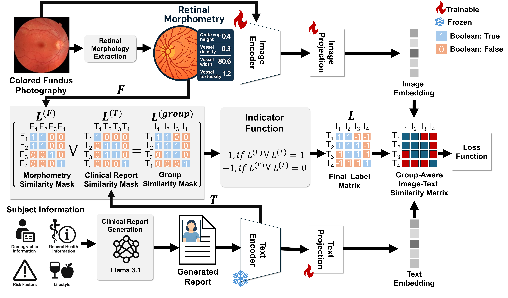

REVEAL Framework
Two-stage pipeline: (1) multimodal contrastive pre-training via GACL, (2) downstream SVM classification using the learned joint embeddings.
Figure 1 — Overview. Clinical scenario and proposed method. REVEAL extracts retinal morphometric features and constructs LLM-generated clinical reports to build a group-aware intra-modality pair matrix. Subjects sharing similar retinal and risk profiles (green) serve as revised positive pairs, enabling richer multimodal alignment.

Figure 2 — Report Generation. Structured risk-factor data (demographics, general health, lifestyle) are converted into standardized natural-language narratives using Llama 3.1 and a CARE-guideline-adapted template, making them compatible with pretrained VLMs.

Figure 3 — GACL Architecture. Morphometric similarity masks (LF) and clinical report similarity masks (LT) are combined via logical OR to form a group similarity mask Lgroup. An indicator function maps this to the final label matrix L, driving group-aware image–text contrastive alignment.
Llama 3.1 converts structured UK Biobank questionnaire data into consistent clinical narratives following CARE guidelines — no hallucination, 1:1 data mapping.
Extends CLIP by grouping clinically similar subjects as positive pairs using both retinal morphometry and text similarity, supporting multiple positive pairs per sample.
17 morphometric features (CDR, vessel density, fractal dimension, etc.) extracted via AutoMorph serve as explicit clinical grounding — more precise than latent similarity.
RETFound image encoder + GatorTron text encoder, with lightweight trainable projection layers. Frozen pretrained weights preserve biomedical foundation model priors.